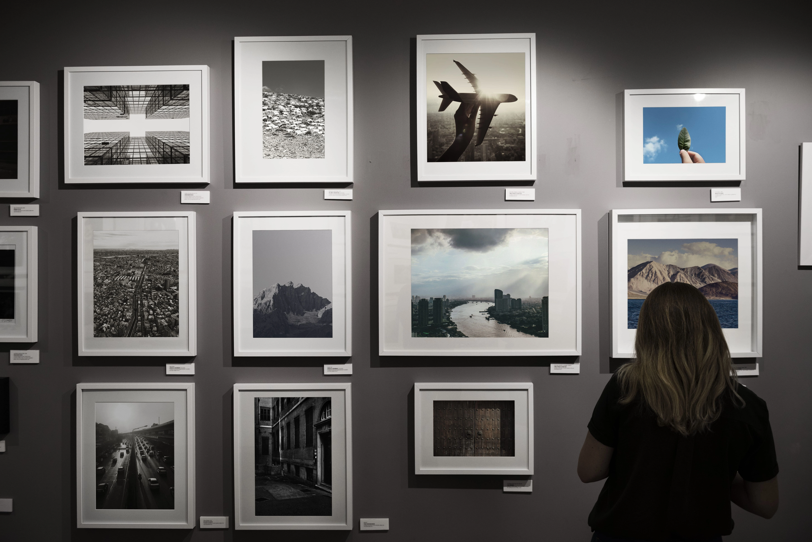

Nuestra historia
El Museo Nacional de Bellas Artes fue inaugurado en diciembre de 1896 en el edificio de las tiendas Bon Marché de la calle Florida, hoy Galerías Pacífico. Desde su origen, se planteó como un espacio destinado a albergar arte internacional de todos los períodos históricos, y a promover y consolidar un arte argentino por entonces incipiente.
Hacia 1910, en épocas del Centenario de la Revolución de Mayo, el Museo ya contaba en su colección con piezas de los maestros Francisco de Goya, Joaquín Sorolla y Bastida, Edgar Degas y Pierre-Auguste Renoir. En 1911, se inauguró la segunda sede del Bellas Artes: el Pabellón Argentino, una estructura monumental que el país había utilizado en la Exposición Universal de París de 1889 y que fue instalada en la Plaza San Martín. Allí, se exhibieron nuevas adquisiciones que ampliaron la colección, como La ninfa sorprendida, de Édouard Manet, y Orillas del Sena, de Claude Monet. La institución fue trasladada en 1933 a su sede actual: la antigua Casa de Bombas de Recoleta, remodelada por el arquitecto Alejandro Bustillo. Durante esos años, se incorporaron destacadas piezas, entre ellas, Mujer del mar, de Paul Gauguin, Le Moulin de la Galette, de Vincent van Gogh, y Jesús en el huerto de los Olivos, de El Greco.
Las últimas décadas del siglo XX acogieron a grandes referentes del arte moderno internacional. Así, se sumaron obras de Pablo Picasso, Amedeo Modigliani, Marc Chagall, Vassily Kandinsky, Paul Klee, Lucio Fontana, Jackson Pollock, Mark Rothko y Henry Moore. La historia de la producción local también se narra en las salas del Museo, que exhibe un vasto panorama de arte argentino, con obras de sus mayores representantes como Cándido López, Prilidiano Pueyrredón, Emilio Pettoruti, Xul Solar, Raquel Forner, Grete Stern, Antonio Berni, Alicia Penalba, Gyula Kosice, Marta Minujín, Antonio Seguí y León Ferrari. Además, posee un importante conjunto de arte latinoamericano, que reúne obras de Pedro Figari, Joaquín Torres García, Tarsila Do Amaral, Diego Rivera y Jesús Rafael Soto, entre otras. En sus más de 120 años, el Museo Nacional de Bellas Artes ha formado una importante colección de más de trece mil piezas de diferentes períodos artísticos, nacionales e internacionales, que lo constituye como una de las instituciones culturales más relevantes del continente.